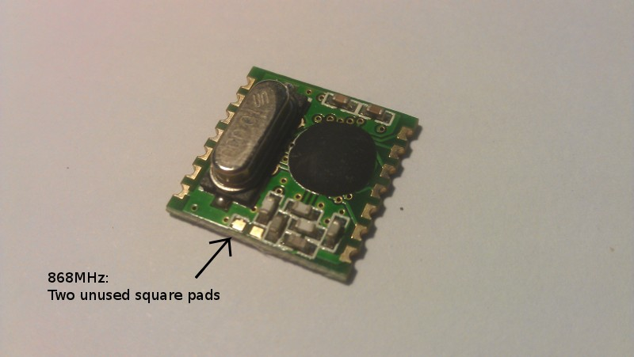

Hi,
I hope someone can help me. I'm doing a college project at the moment and this is my first introduction to electronics. I'm trying to get basic communication signals working between these two modules where I can then see it on my computer.
I've followed the building blocks for setting up the arduino environment and uploaded the first emonTx_CT123_Voltage.ino file onto the emontx to receive a flashing LED, but WHAT NEXT?!
- the document just stops...
I have all the required libraries in the IDE but I don't what they are doing or what any of this means. All I want to do is use the CT sensor to take readings.
I'd be grateful for any help...
Thanks,
Darren
Re: How to set up basic communication signals with emontx and Nanode RF basestation
You could try reading the Building Blocks articles on the RFM12B to understand how the data is packaged and transmitted.
Then you need to assemble your Nanode (There is a page under "Modules", but don't be fooled when you test your Nanode, it does not have the "Blink" sketch loaded by default, you need to load it!).
Then download one of the Nanode base sketches (probably the 'multinode'), read through it to try to understand how it works (though don't worry about the Ethernet side of things) and upload to your Nanode.
You'll need to check the transmitter frequency is set in both sketches to suit the modules you have, but I think everything else should default to suitable numbers.
Then if all went to plan, you should see the incoming data with the serial monitor connected to the Nanode.
As for the libraries, this is all common code that does very particular functions. You don't need to use it if you're good enough to write your own, but I'm not and life's too short, so like everyone else I use the tested and proven library functions. The functions that send and receive the RFM12B messages are just one example. The emonLib functions that read the analogue inputs and calculate power and rms values of voltage and current are another. You don't need to understand their intimate details, just how to use them correctly.
Re: How to set up basic communication signals with emontx and Nanode RF basestation
Hi again Robert,
What I'm having a hard time understanding is that I have all the libraries in the Arduino IDE but there are many subheadings - do you just follow the "Guide" heading, upload the firmware onto the modules and then see what happens? Or do I upload them one after another
Where is the RFM building block articles?
Maybe I just need to sit tight and read through the entire building blocks manual to understand what it's doing...
Re: How to set up basic communication signals with emontx and Nanode RF basestation
And I'm finding it a bit difficult to pin down exactly where you've got to and where you want to go next!
Basically, the libraries just sit there - I don't think there are any inter-dependencies but at the top of each sketch, there should be a line or two saying "This sketch requires...." which tells you what you need. If your emonTx sketch compiled and loaded OK, it's indicative that you've got all that done correctly. And for now I recommend that you leave it at that, until you come to write your own sketches from scratch.
What "Guide Headings" are you referring to - the list on the NanodeRF page? Yes, you can work through those if you wish, they are absolute 'bare bones' sketches to illustrate the principles. They do work (I tested them!). You'll find full 'production' sketches on GitHub (link in the page heading).
Beware: The Arduino IDE examples won't necessarily work with the emon.... hardware because things like the on-board LED are on different pins. I recommend you stick with material on this site until you get the hang of it.
If you click on Building Blocks (top right under Site Map), you'll get the contents page with everything listed.
Re: How to set up basic communication signals with emontx and Nanode RF basestation
Basically I've completed the first step:
Arduino
Setting up the arduino environment
I'm wondering can I not just clip the CT sensor to my electricity meter cable, upload a specific firmware/sketch to the emontx and emontx to get them communicating to each other and then see some readings through emoncms or in serial.
What do I need to do in order to get this setup?
Re: How to set up basic communication signals with emontx and Nanode RF basestation
Now I do understand. Yes you can.
You've set up your Arduino environment and loaded the "emonTx_CT123_Voltage" sketch, and it compiled and ran.
At this point, you can connect the serial monitor and read the variables that are printed to serial: the power (powers if you've enabled more than 1 c.t.) and the voltage. It will also be transmitting the 3 powers and the voltage.
You need to check line 33: #define freq RF12_433MHZ and change it to suit your RFM12B modules if needs be.
Now build your Nanode, download the sketch NanodeRF_multinode from Github.
Again, check line 36 and change it if necessary. Don't bother with any of the Ethernet / Web /IP addresses for now. Compile and run the sketch, and monitor the serial port. It won't work properly - the aim is just to prove you have comms between the two modules.
You should see
[webClient]
then nothing for a long time while it tries unsuccessfully to get onto the Internet (it's got no physical nor logical connection yet!), then you'll probably see
DHCP status: 0
DHCP failed
Data sent: /api/post.json?apikey=YOURAPIKEY&json={rf_fail:1}
Time request sent
then after another wait
DHCP status: 0
DHCP failed
Data sent: /api/post.json?apikey=YOURAPIKEY&node=10&csv=1,26,0,38,1,33
Time request sent
When you see "&node=10&csv=1,26,0,38,1,33" - the actual numbers following "csv=" will of course be different, you know the modules are talking.
If you've got that far, then you can set up the Nanode to chat to emoncms.org (Beware, "emoncms" can mean two things, the free web-based service offered by OEM - "emoncms.org", or the PHP program running on a local server or under WAMP.)
The easiest to set up is emoncms.org. Register yourself and get an APIkey - it's available via the Input API help on the Inputs page. Go back to your NanodeRF, paste the APIkey in where it says (line 83), and invent a MAC address for your Nanode (line 68). Everything else should be OK. Plug in an Ethernet cable to your router and compile and upload the sketch.
This time, you should see (with a few long waits in between while it times out and retries)
[webClient]
~ wait ~
DHCP status: 0
DHCP failed
Data sent: /api/post.json?apikey=39623397b3126c1afc2ddf1ea98bc5a2&json={rf_fail:1}
Time request sent
~ wait ~
DHCP status: 1
IP: 192.168.1.64
GW: 192.168.1.254
DNS: 8.8.8.8
DNS status: 1
SRV: 213.138.101.177
Data sent: /api/post.json?apikey=39623397b3126c1afc2ddf1ea98bc5a2&node=10&csv=0,31,3,36,0,28
Time request sent
Time: t15,53,13
Data sent: /api/post.json?apikey=39623397b3126c1afc2ddf1ea98bc5a2&node=10&csv=0,32,0,39,0,31
OK recieved
Data sent: /api/post.json?apikey=39623397b3126c1afc2ddf1ea98bc5a2&node=10&csv=-1,29,1,24,0,34
OK recieved
Data sent: /api/post.json?apikey=39623397b3126c1afc2ddf1ea98bc5a2&node=10&csv=2,30,0,39,1,35
OK recieved
Data sent: /api/post.json?apikey=39623397b3126c1afc2ddf1ea98bc5a2&node=10&csv=0,34,0,23,1,34
OK recieved
[That's not a real APIkey, and some of the numbers will be different.]
First, the NanodeRF requests an IP address from your router. If successful "DHCP status: 1", it gets one "IP: 192.168.1.64" which will depend on what your router allocated. "GW: 192.168.1.254" will also depend on your router's settings. "DNS: 8.8.8.8" meant it went to Google's Domain Name Service to get the IP address of emoncms.org, it was successful "DNS status: 1" and the IP address it got back was "SRV: 213.138.101.177"
Then, when you look at Inputs at emoncms.org, you should have and be able to click on Node 10 and it will expand to show four inputs named 1-4, and if you click [log] you'll see a graph of the data.
It also got back from the server the current time: "Time: t15,53,13".
Re: How to set up basic communication signals with emontx and Nanode RF basestation
Sorry, what do you mean check line 33? How do you do this to begin? My modules will be using the Europe frequency...
But I went ahead and upload the two sketches (although I haven't got actually connecting the CT sensor just ye but I still get readings)
0 0 0 0.29 Programming cable connected to EmonTX with CT sensor - Nanode RF powering off plug
Then:
&node=10&csv=0,0,0,21 ( Programming cable connected to Nanode RF, emontx powering off plug
But I don't know see "LINE" anywhere in the serial monitor.
I have an APIkey read-only & read & write - which one?
Thanks for the help Robert. I appreciate the effort.
P.s - maybe you can tell me but beside the Baud rate in the serial monitor there is a drop down box with four options: No line ending, newline and so on. What is this?
Re: How to set up basic communication signals with emontx and Nanode RF basestation
In Emontx, how do I define the RF:
Serial.print(" Freq: ");
if (freq == RF12_433MHZ) Serial.print("433Mhz");
if (freq == RF12_868MHZ) Serial.print("868Mhz");
if (freq == RF12_915MHZ) Serial.print("915Mhz");
I thought I bought the 868MHz specific modules but when I define the RF as 868MHz in the Nanode multinode sketch the modules don't communicate with it each whereas they do on 435MHZ?!
I get &node=10&csv=0,0,0,21 (varies)
BUT When I move it into the hall I just get RF Fail
Re: How to set up basic communication signals with emontx and Nanode RF basestation
You need to check line 33: #define freq RF12_433MHZ
That's the 33rd line down counting from the top of the sketch! ! ! I use a decent editor (Notepad++) that shows the line numbers in the left margin (here's a bit of the Nanode sketch):
If your RF module is a 433 MHz version, the line is correct. If it is 868 MHz, you change the line to #define freq RF12_868MHZ
[Edit] Both ends - emonTx and Nanode - need to have the same frequency for both the module and the software.
Aside:
As you asked about libraries, for interest & information only, look in the Jeelib library at the file RF12.h In there, you'll find the three frequencies defined:
The reason that's done is to make it clear what frequency your sketch is using. What happens is wherever in your sketch you want to set the frequency, you could write "1". But that's mysterious - it means little. And if you want to change the frequency, you have to change it everywhere. But if you write "freq" instead of "1", and then "#define freq RF12_433MHZ" at the top, the compiler substitutes "RF12_433MHZ" instead of "freq", and if you change your mind, you only have to change it once. But the compiler has already come across "#define freq RF12_433MHZ 1", so actually it substitutes "RF12_433MHZ" for "freq" and "1" for "RF12_433MHZ"
That way the program gets "1" but you read it as "RF12_433MHZ" and you know what the frequency is.
But as you see "&node=10&csv=0,0,0,21" it's obviously working. If you get the frequency wrong, it will work over a very short distance, but nowhere near the 100 m that it is supposed to with no obstructions. However, you don't have the a.c adapter plugged in? otherwise the last number - 21 - should be 230 or whatever your mains voltage is.
I have an APIkey read-only & read & write - which one?
You're writing data into the database - does that give you a big clue? ! ! !
a drop down box with four options
This is because the IDE is cross-platform and historically, Windows systems have handled the end-of-line in a text file differently to Unix and its derivatives - Mac and Linux. You choose the one that gives the correct display.
Re: How to set up basic communication signals with emontx and Nanode RF basestation
I got the RF modules to pick up on the 868MHZ by defining them through notepad +++ and uploading them again but is it common to get so many fails?
I have the emonbase in my room connected to the computer via the programmer cable and then the emontx is in the hall (4-5m away) powered by a 9v plug got from the openenergymonitor shop.
The connection seems really weak. It works sometimes, and when I move it further away I get RF fail (8m away).
But it just says "
Data sent: /api/post.json?apikey=YOURAPIKEY&node=10&csv=0,0,0,22
I ordered the 868 MHZ modules.
Is there anyway to speed up the serial code of this process - it seems to only show results every minute or two.
What could I be doing wrong? Could the soldering be anything to do with it? I did emontx myself and the antenna could possibly need more 'insulation'.
Re: How to set up basic communication signals with emontx and Nanode RF basestation
The emontx should be transmitting every 5-7 seconds and so you should see:
Data sent: /api/post.json?apikey=YOURAPIKEY&node=10&csv=0,0,0,22 at the same rate.
Does the rate increase to this when both of them say 1m apart?
I wonder, just incase we made a mistake here with sending you a wrong RF module do both of your modules have two unused pads where another of those small resistors would be (This resistor is present on 433Mhz modules)?

The modules can be quite sensitive to the quality of soldering on the outer pads that solder up to the emontx. Its easy to not make a connection, the solder joints there are always worth checking too.
Re: How to set up basic communication signals with emontx and Nanode RF basestation
You are only seeing a print every minute because the sketch you are using is waiting for the Ethernet to time out.
At the risk of adding some confusion, you could switch to a pair of test sketches that only transmit and receive, while you are testing only the radio side. You'll find them on GitHub as "RFM12B_Simple" - one for your transmitter (TX), the emonTx; and one for your receiver (RX), the NanodeRF. These send a set of values every couple of seconds.
Like the sketches you're using, you need to set the frequency to suit your modules - or more likely, try both settings (433 & 868) to see which works best (over the longest range) if you can't tell which version of the RFM12B you have.
Re: How to set up basic communication signals with emontx and Nanode RF basestation
Yes, they have the two unused pads so they must be the 868MHZ RF modules.
I uploaded that RF simple sketch from Github and it appears to work no problem, even when I move it outside the room. The values I get every couple of seconds are attached.
Then I uploaded the emonTX_CT123_voltage sketch to the emontx and NanodeRF_mulitinode sketch to the Nanode RF with both frequencies defined at 868MHZ.
The results are attached where I have them beside each other first and then away from each other.
Could it be that I am running the Emontx off a usb powered plug, or are these values okay?
Re: How to set up basic communication signals with emontx and Nanode RF basestation
The simple sketch runs perfectly OK, it's not missing any transmissions - at least in the 7 that I can see. Although I didn't see this, I think the fact that the Nanode is waiting for the Ethernet is making it miss messages. RF Fail means that it didn't handle a message for 30 seconds, and if it was tied up waiting for the Ethernet to respond, that would happen. I think you can carry on and set it up to work over Ethernet to emoncms.
Re: How to set up basic communication signals with emontx and Nanode RF basestation
I've been trying to set up the ethernet connection but when you say '"invent a Mac address"....how do you do this.
This was the code as before it was changed:
// ethernet interface mac address, must be unique on the LAN
static byte mymac[] = { 0x42,0x31,0x42,0x21,0x30,0x31 };
I found my Ethenet adapter Local area connection with a physical address of 00-1D-72-FB-5A-90 in command prompt ipconfig/all.
I've then input it as follows:
// ethernet interface mac address, must be unique on the LAN
static byte mymac[] = { 0x00,0x17,0xC4,0x75,0xE4,0x38 };
Is this how you do it??...the sketch compiles okay and I've uploaded it to the Nanode RF but haven't seen any change in the values I'm receiving on the serial monitor.
Re: How to set up basic communication signals with emontx and Nanode RF basestation
Yes, static byte mymac[] is where you change it, and the format is correct. As far as I know, although the MAC address is supposed to be totally unique world-wide, it is good enough if it is unique within your LAN. That is, it is different to your router, computer and any others. The code before you changed it would probably have been OK too.
Have you connected to your router now, and does it communicate like this when you start or reset it:
DHCP status: 1
IP: 192.168.1.64
GW: 192.168.1.254
DNS: 8.8.8.8
DNS status: 1
SRV: 213.138.101.177
Data sent: /api/post.json?apikey=39623397b3126c1afc2ddf1ea98bc5a2&node=10&csv=0,31,3,36,0,28
Time request sent
Time: t15,53,13
Data sent: /api/post.json?apikey=39623397b3126c1afc2ddf1ea98bc5a2&node=10&csv=0,32,0,39,0,31
OK recieved
Re: How to set up basic communication signals with emontx and Nanode RF basestation
As far as I know, although the MAC address is supposed to be totally unique world-wide, it is good enough if it is unique within your LAN.
Yes, uniqueness on the LAN is sufficient as the MAC address doesn't leave the subnet.
If you end up with a few of these devices around your house it can get tricky to keep track. You can set up your own locally administered convention quite simply. I set the U/L bit, put my initials in another byte (which happen to be all <= 'f') and then start "issuing" from 0, using a text file to keep track. That way I can immediately spot my MAC addresses in an ARP table, and if I want to further distinguish between them I can just turn to the text file to see exactly which device it is. The other tip is to avoid setting the multicast bit.
Once you've set the U/L bit you'll know you're safe from conflicting with any "bought" products, as they'll all ship with universally administered addresses.
http://en.wikipedia.org/wiki/MAC_address
Re: How to set up basic communication signals with emontx and Nanode RF basestation
Perfect! I've got it up and running on emoncms in realtime.
I'm just wondering now is my CT sensor placed the right way. The graph I'm getting is very straight and staying at 0.00- is it very sensitive to change?
Re: How to set up basic communication signals with emontx and Nanode RF basestation
Is that graph power or current? If it's power, is your voltage sensor plugged in? You need both voltage and current to show power. Where is your c.t.? I can't see it in the pictures. You should clip it around one of the main cables. In your picture, 4 is the incoming line, 3 the incoming neutral, 2 should be the outgoing neutral (why is it red?) and 1 should be the outgoing line. I would clip it around 3 as it looks the easiest to get at. You decide whether you want imported power to show as positive or negative. If it's the wrong way round, reverse the c.t. on its cable. Finally, is the plug on the c.t. fully home in the socket? They can be tricky to get all the way in, there should be no bare metal of the plug showing. Does it read a sensible power on the serial monitor?
Re: How to set up basic communication signals with emontx and Nanode RF basestation
I don't know what that is a graph for to be honest.
My setup at the moment is as follows:
EmonBase connected to a power supply with a 9V Usb powered plug into usb socket on emonbase and ethernet cable connected to router.
EmonTx connected to a power supply with a 9V Usb powered plug into usb socket on emontx and CT sensor connected to cable 3 on the electricity meter. The CT sensor is securely connected to the socket closest to the RF module.
I'm just staying in this house for 1 year so I can't tell you much about the electricity meter - it's quite an old house!
Which is the voltage sensor?
On the inputs page on emoncms, I see 3 inputs from node 1 and 4 inputs from node 10.
For that graph I just clicked on the wrench icon on the first input of node 10 and set up a Logtofeed to begin. What processes should I add after this?
Re: How to set up basic communication signals with emontx and Nanode RF basestation
Which is the voltage sensor? It's an ac-ac adapter plugged into a convenient socket. I guess you don't have one, in which case you're using the wrong sketch!
The sketch you're using expects the voltage sensor to be plugged into the coaxial power socket at the opposite corner to the RFM12. It allows the real power to be measured. If you haven't got one, you need to change to the emonTx_CT123 sketch which measures only current and assumes a fixed voltage (240 V but you can change it) and unity power factor. (Hence it give an approximation only to the power.) (You can read in Building Blocks how the calculations are done.)
Do you mean 5 V USB plugs? - I hope so!
In emoncms, Node 1 will likely be from clicking on a dummy demo feed somewhere - or an rf fail message. Node 10 is your emonTx, and the inputs are the values in Payload in the order they are in Payload. So input 10.1 is power. But as voltage is zero, it will be zero, which it is.
I can't tell you what other processes to add - it depends on what you want to show! kWh seems a likely one.
Re: How to set up basic communication signals with emontx and Nanode RF basestation
Yes, apologies, I meant 5v.
Note: emonTx cannot be powered using this adapter, 5V DC USB power adapter is required.
Does this mean that I have to plug both this ac adapter and the 5v usb plug into the emonTX?
I have to buy this in so...
I uploaded the emontx_CT123 sketch and started to get graphs. It's strange though because the time on the graph seems to be one hour behind....
I might see if I can it running on wamp now...
I'm just wondering also, if this is the basic sketch...do I not have to burn all the firmware to EmonTx to get all the features at some stage or do you leave it as it is in order to update/change the sketch if needed?
Many thanks for all the help Robert by the way....I'd be lost without it.
Re: How to set up basic communication signals with emontx and Nanode RF basestation
Does this mean that I have to plug both this ac adapter and the 5v usb plug into the emonTX?
That is correct. The a.c adapter is only there to provide a measurement of the mains voltage. It doesn't provide power.
the time on the graph seems to be one hour behind....
You can set your time zone in emoncms to put that right.
I might see if I can it running on wamp now...
I've just helped another forum member with that: http://openenergymonitor.org/emon/node/2148
I'm just wondering also, if this is the basic sketch...do I not have to burn all the firmware to EmonTx to get all the features at some stage or do you leave it as it is in order to update/change the sketch if needed?
I'm not sure what you're asking there. The sketch is all you need to load, there should never be any need to touch the bootloader.
Re: How to set up basic communication signals with emontx and Nanode RF basestation
Okay I followed all the details on setting up Wamp but when I finally click into the Emoncmsmaster under MyProjects, and try to log into emoncms....it says that my username does not exist. I used the same username and password as I used with emoncms previously and simply edited the settings.php in a wordpad document filling them in between the apostrophes.
I don't see where the problem is? Any suggestions?
Re: How to set up basic communication signals with emontx and Nanode RF basestation
never mind, I just had to register again.
But does this now mean that I have to replace the old API key with a new one?!
Honestly I was not sure what was going to happen by setting up my own database and this may be a stupid question but what is the big advantage of doing this?
Can I feed this information to my own website for processing?
Cheers for the help again Robert.
Re: How to set up basic communication signals with emontx and Nanode RF basestation
Even if you have the same user name and password in your own copy as in emoncms.org, I think (though I haven't tested this) you'll get a different APIkey, which you'll therefore need to change in your NanodeRF.
Your user name inside emoncms is NOT the one you put into settings.php You can make the two to be identical, but they aren't linked in any way. You can think of the "user" in settings.php as being emoncms itself, and this is it's user name and password to get into the database, the one which you set up for it in phpmyadmin. It doesn't have to be a person who logs in to emoncms and sends readings to it.
The big advantage of having your own database is it is under your control. You can back it up if you want to (emoncms.org is not backed up, as far as I know), and you can customise all of the software to do your own thing, e.g. design your own graphics.
If the database is accessible to your server, you can do whatever you like with it! There are others around here who know more about this than I do.
Re: How to set up basic communication signals with emontx and Nanode RF basestation
Is the API key the only code you would need to change in the NanodeRF_Multinode sketch? I can't seem to get it up and running on my new database when I log in and the serial monitor doesn't show "OK received"...
Surely one of the lines has to change here in order to add localhostserver:
// 1) Set this to the domain name of your hosted emoncms - leave blank if posting to IP address
char website[] PROGMEM = "emoncms.org";
// or if your posting to a static IP server:
static byte hisip[] = { 192,168,1,10 };
// change to true if you would like the sketch to use hisip
boolean use_hisip = false;
// 2) If your emoncms install is in a subdirectory add details here i.e "/emoncms3"
char basedir[] = "________________";
// 3) Set to your account write apikey
char apikey[] = "________________";
Re: How to set up basic communication signals with emontx and Nanode RF basestation
Any thoughts?
I still haven't figured out how I can get the information on my database.....
Re: How to set up basic communication signals with emontx and Nanode RF basestation
If you are posting to a local server, you must use the static IP address ("hisip"). The address you use is the one that your router has allocated to the machine that emoncms is running on. To instruct the NanodeRF to use that, you must set use_hisip = true; You must also set basedir[ ] to the correct subdirectory, and the APIkey to your account write apikey for that instance of emoncms.
You will also need to instruct your router to always allocate the same IP address to the Server, which it identifies by the MAC address.
Re: How to set up basic communication signals with emontx and Nanode RF basestation
okay, so I removed emoncms.org from this
// 1) Set this to the domain name of your hosted emoncms - leave blank if posting to IP address
char website[] PROGMEM = "";
But I don't understand when you say "The address you use is the one that your router has allocated to the machine? that emoncms is running on" - is that your physical IP address of the ethernet adapter local area connection...? This is what I had previously put in to run it on emoncms.org
And subdirectory? the sketch gives an example as "i.e "/emoncms3"".....but does this just mean that if my "Emoncms-master" folder that I have placed in Wamp folder on my drive, I call it "/Emoncms-master"???
Also, should it say "OK received" when it works?
Re: How to set up basic communication signals with emontx and Nanode RF basestation
But I don't understand when you say "The address you use is the one that your router has allocated to the machine? that emoncms is running on" - is that your physical IP address of the ethernet adapter local area connection...? This is what I had previously put in to run it on emoncms.org
Yes. It is the address of the server. But because use_hisip was false, the Nanode wasn't using that.
And subdirectory? the sketch gives an example as "i.e "/emoncms3"".....but does this just mean that if my "Emoncms-master" folder that I have placed in Wamp folder on my drive, I call it "/Emoncms-master"???
Correct.
Also, should it say "OK received" when it works?
Correct - and send back a time when it gets asked every minute (I understand this didn't work, but has been fixed in the last day or two). Or put another way, it should behave exactly as emoncms.org did.
Re: How to set up basic communication signals with emontx and Nanode RF basestation
It just doesn't seem to work....no "OK received" and it doesn't pick up the time.
This is my setup:
// ethernet interface mac address, must be unique on the LAN
static byte mymac[] = { 0x00,0x1D,0x72,0xFB,0x5A,0x90 };
// 1) Set this to the domain name of your hosted emoncms - leave blank if posting to IP address
char website[] PROGMEM = "";
// or if your posting to a static IP server:
static byte hisip[] = { 192,168,1,10 };
// change to true if you would like the sketch to use hisip
boolean use_hisip = true;
// 2) If your emoncms install is in a subdirectory add details here i.e "/emoncms3"
char basedir[] = "/emoncms-master";
// 3) Set to your account write apikey
char apikey[] = "22eedff1742e32543e94bc2d29abc3";
I've attached the values I get on the serial monitor.
I would be using this link to get emoncms which has been updated recently.
I'm also using firefox but I wouldn't think that makes much of difference...
Re: How to set up basic communication signals with emontx and Nanode RF basestation
I wonder is it to do with my network connections.
I have a local area connection and a wireless network connection. I'm connected to the internet wirelessly at the moment and the ethernet cable connects the Nanode RF to the router.
Which connection do I configure in order to set up a static Ip address? Surely it's the local area connection (ethernet) considering that is the one connected to the Nanode RF.
Although, the ip address that I set it to obtain do not show up when I upload the sketch and receive values. It seems to be trying to connect to a different ip address in the serial monitor. This must be the wireless network connection ip which is currently set to obtain it's ip address automatically...
I can't seem to set up a static ip on this though or my computer won't connect to the internet..
any thoughts?
Re: How to set up basic communication signals with emontx and Nanode RF basestation
I wonder is it to do with my network connections. I think there is little doubt that is the case.
I have a local area connection and a wireless network connection. I'm connected to the internet wirelessly at the moment and the ethernet cable connects the Nanode RF to the router. That is exactly my test set-up.
I'm also using firefox So am I.
Which connection do I configure in order to set up a static Ip address? Surely it's the local area connection (ethernet) considering that is the one connected to the Nanode RF. I have just written a draft set of instructions for connecting to emoncms. For the local version, I used the "NanodeRF_multinode_static_IP" sketch. Here is the top of that sketch:
/ ethernet interface mac address, must be unique on the LAN
static byte mymac[] = { 0x42,0x31,0x42,0x21,0x30,0x31 };
// 1) Set this to the domain name of your hosted emoncms - leave blank if posting to IP address
char website[] PROGMEM = "";
// or if your posting to a static IP server, change to true if you would like the sketch to post to static IP (not sure if this is working..)
boolean use_hisip = true;
//static byte hisip[] = { 213,138,101,177}; //emoncms.org IP
static byte hisip[] = { 192,168,1,69}; // IP of Machine with Wampserver running
// Set to true and enter IP to give the NanodeRF a static IP address - default is DHCP (NB: must be used with static server IP (hisip)
boolean use_staticIP = true;
static byte myip[] = { 192,168,1,66 }; //NanodeRF static IP address - not needed if using DHCP
static byte gwip[] = { 192,168,1,254 }; // gateway ip address - not needed if using DHCP
// 2) If your emoncms install is in a subdirectory add details here i.e "/emoncms3"
char basedir[] = "/emoncms-dev";
// 3) Set to your account write apikey
// char apikey[] = "----your API key ---";
char apikey[] = "a82fc888b48640ca24a23cf0e4718cc5";
Obviously your specific details will be different. Have you interrogated your router and got the IP address of the server from there? That is the certain way of getting the correct address to put in hisip[ ]
Are you using Wampserver? Have you put it "On-line"? (Hover your mouse over its taskbar icon.) You need to do that to make it visible outside the machine it is running on (i.e. to your router and thence to your Nanode).
Re: How to set up basic communication signals with emontx and Nanode RF basestation
It's really annoying me at this stage because I feel so close but yet I can't seem to get it right!
// or if your posting to a static IP server, change to true if you would like the sketch to post to static IP (not sure if this is working..)
boolean use_hisip = true;
static byte hisip[] = { 192,168,1,69}; // IP of Machine with Wampserver running
// Set to true and enter IP to give the NanodeRF a static IP address - default is DHCP (NB: must be used with static server IP (hisip)
boolean use_staticIP = true;
static byte myip[] = { 192,168,1,66 }; //NanodeRF static IP address - not needed if using DHCP
static byte gwip[] = { 192,168,1,254 }; // gateway ip address - not needed if using DHCP
Can you tell me exactly where you got these 3 addresses from???
Re: How to set up basic communication signals with emontx and Nanode RF basestation
Yes, invent one (as I've told you already), ask your router for the others! I've no idea which make/model router you have, so no idea where to find the information, but it'll be in there somewhere. You need to read your router's manual - about DHCP and IP addresses.
Alternatively, you can find the default gateway and the IP address of the machine that's running Wampserver by typing on that machine at the command prompt:
But you still need to get into your router's advanced configuration menu to make the IP addresses static, else they might change if the router resets itself for any reason.